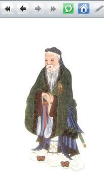
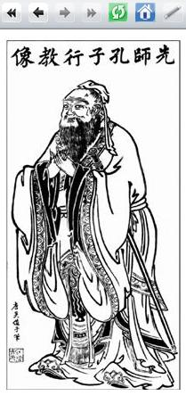

Kako naj vodi ljudi tisti, ki niti samega sebe ne obvlada? (Konfucij)
  Slike 1, 2 in 3: Animacija slike, ki je povezava - koda in videz spletne strani 1. Naprej shrani v svojo mapo tole sliko pod imenom "konfucij1". Tip datoteke naj bo ".jpg". 2. Nato shrani v svojo mapo tole sliko pod imenom "konfucij2". Tip datoteke naj bo ".jpg". 3. Izdelaj spletno stran, ki bo izgledala tako, kot kažejo slike 1, 2 in 3. Datoteko poimenuj "25apriimek.html". Ne pozabi na konènico ".html". POZOR: Najprej NATANÈNO izdelaj vajo v tej uèni enoti in jo pokaži profesorju, nato zapiši odgovore na spodnja vprašanja. 4. V kodo primera v tej uèni enoti vstavi spodaj navedene komentarje na ustrezna mesta, ki jih ti komentarji pojasnjujejo. //Glava ali naslov funkcije, ki bo zamenjala sliko, ko se bo kazalec miške nahajal izven te sliki. //Slika, ki se bo pojavila, ko bo kazalec miške na njej. //Glava ali naslov funkcije, ki bo zamenjala sliko, ko se bo kazalec miške nahajal na tej sliki. //Znaèka v HTML, ki oznaèuje vstavljeno sliko v spletno stran. //Slika, ki se bo pojavila, ko kazalec miške ne bo na njej. 5. Kodo primera v tej uèni enoti spremeni tako, da se bosta med seboj menjali drugi dve sliki. Sliki izberi sam/a, njun format naj bo ".jpeg".6. Kodo primera v tej uèni enoti spremeni tako, da bo na spletni strani poleg že obstojeèe slike še ena slika, ki se bo ravno tako spreminjala obpomikanju miške kot prva. Sliki, ki se bosta menjali na mestu druge slike izberi sam/a, njun format naj bo ".jpeg". 1. Vprašanja za usmerjanje pozornosti in usvajanje novih besed: 1. Kakšna je naloga dogodka "on Submit"? 2. Katero funkcijo JavaScripta obièajno poklièemo ob dogodku "onSubmit"? 3. Kakšno vrednost lahko vrne funkcija iz prejšnjega vprašanja? 4. Kaj je dogodek "onmouseOver"? 5. Kaj je dogodek "onmouseOut"? 2. Zapiši od ene do pet kljuènih besed, ki povzemajo vsebino te uène enote. 3. Vprašanja za razmislek in povezovanje z lastno izkušnjo: 1. Kateri dve JavaScript funkciji smo doloèili ali zapisali v glavi HTML dokumenta na sliki 1? 2. Katero sliko prikaže na spletni strani funkcija JavaScripta, ki je zapisana prva? 3. Katero sliko prikaže na spletni strani funkcija JavaScripta, ki je zapisana druga? 4. Napiši URL naslov spletne strani, na katero kaže povezava, ki jo izdelamo v kodi na sliki 1? 5. Kje v kodi HTML na sliki 1 vkljuèimo klica funkcij, ki smo ju zapisali v glavi HTML dokumenta na sliki 1? 4. Domaèa naloga: 1. V zvezek prepiši misel, ki je zapisana na zaèetku uène enote z rdeèimi èrkami. Zabeleži nekaj lastnih misli, ki se ti utrnejo ob razmišljanju o njej. 2. Odgovori na vprašanja, na katere nisi uspel/a odgovoriti v šoli. 5. DODATNO DELO: 1. Izdelaj spletno stran, ki bo izgledala tako, kot kažejo slike 1, 2 in 3. Izgled strani spremeni le toliko, da bosta sliki drugaèni; namreè taki po tvoji izbiri. Pazi, da boš nove slike shranil/a v pravi mapi in da boš ustrezno spremenil/a izvorno kodo spletne strani. Datoteko poimenuj "25bpriimek.html". Ne pozabi na konènico ".html". |
{kind=link}
{kind=link}